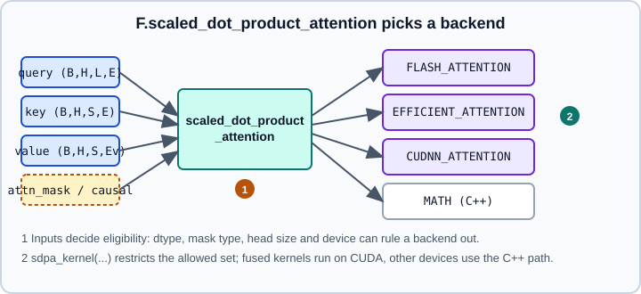

Attention, SDPA, FlexAttention & Transformers
|
This content was generated with the assistance of AI and should be verified against the official documentation before being relied on in production. |
This page is the PyTorch side of attention. The idea (queries, keys, values, multiple heads, positional information) is explained in Attention & Transformers, and the full decoder-only architecture used by large language models in Transformer Architecture. Here the focus is the API: the fused function F.scaled_dot_product_attention (SDPA), the backend switches in torch.nn.attention, the older module nn.MultiheadAttention, the nn.Transformer* layers, FlexAttention for custom score and mask functions, and variable-length attention for packed sequences. A worked model that puts the pieces together is in Worked Example: Transformer Building Blocks.
Examples were run on Python 3.13 with PyTorch 2.15 (CPU) on 2026-10-31. The sdpa_kernel backend selection and varlen_attn examples need a CUDA GPU and were not executed, and compiling FlexAttention was skipped on the CPU used (macOS arm64, where Inductor raises NotImplementedError for it). Fused kernels (FlashAttention, memory-efficient, cuDNN) run on CUDA only, so on CPU every example uses the C++ implementation. FlexAttention and varlen are labelled prototype or newer APIs in the documentation; treat their signatures as subject to change.
Attention in one equation
For queries \(Q \in \mathbb{R}^{L \times E}\), keys \(K \in \mathbb{R}^{S \times E}\) and values \(V \in \mathbb{R}^{S \times E_v}\):
\[ \operatorname{Attention}(Q, K, V) = \operatorname{softmax}\!\left(\frac{Q K^\top}{\sqrt{E}} + M\right) V \]
\(M\) is an optional additive mask: \(0\) where a query may look at a key and \(-\infty\) where it may not. Every query produces a probability distribution over the \(S\) keys and returns the weighted mean of the values. Computing this naively materializes an \(L \times S\) score matrix, whose memory grows quadratically with sequence length. Fused kernels avoid writing that matrix to GPU memory, which is the reason to prefer SDPA over hand-written matmul and softmax.
The tensor layout PyTorch uses for the function API is (batch, heads, sequence, embedding), so a multi-head input is shaped (B, H, L, E). This differs from nn.MultiheadAttention, which is (L, N, E) by default.
F.scaled_dot_product_attention
The 2.15 signature is:
torch.nn.functional.scaled_dot_product_attention(
query, key, value,
attn_mask=None, dropout_p=0.0, is_causal=False,
*, scale=None, enable_gqa=False,
)Source: https://docs.pytorch.org/docs/stable/generated/torch.nn.functional.scaled_dot_product_attention.html
| Argument | Meaning and pitfalls |
|---|---|
|
|
|
Boolean or float. A boolean mask means the element takes part in attention ( |
|
Applied whenever it is greater than zero, regardless of |
|
Applies a causal (lower-triangular) mask. Passing both |
|
Keyword-only. |
|
Experimental in the docs. Lets keys and values have fewer heads than the query (grouped-query attention). The query head count must be divisible by the key/value head count, and key and value must have the same head count. |
The causal mask has a subtle edge case: with \(L \ne S\) (for example during cached decoding) a causal mask aligned to the top-left corner is rarely what a KV cache needs (alignment behaviour for is_causal=True was not re-checked on the 2.15 page). For a bottom-right aligned mask use torch.nn.attention.bias.causal_lower_right, described below, or pass an explicit boolean attn_mask.
import torch
import torch.nn.functional as F
B, H, L, E = 2, 8, 128, 64
q = torch.randn(B, H, L, E)
k = torch.randn(B, H, L, E)
v = torch.randn(B, H, L, E)
# 1. plain attention, no mask
out = F.scaled_dot_product_attention(q, k, v)
# 2. causal self-attention
out_causal = F.scaled_dot_product_attention(q, k, v, is_causal=True)
# 3. explicit boolean mask: True means "may attend"
pad_len = torch.tensor([128, 100]) # valid tokens per sequence
keep = torch.arange(L)[None, :] < pad_len[:, None] # (B, S)
mask = keep[:, None, None, :] # (B, 1, 1, S) broadcasts over heads and queries
out_masked = F.scaled_dot_product_attention(q, k, v, attn_mask=mask)
# 4. grouped-query attention: 8 query heads share 2 key/value heads
kv_heads = 2
k_gqa = torch.randn(B, kv_heads, L, E)
v_gqa = torch.randn(B, kv_heads, L, E)
out_gqa = F.scaled_dot_product_attention(q, k_gqa, v_gqa, is_causal=True, enable_gqa=True)
print(out.shape, out_causal.shape, out_masked.shape, out_gqa.shape)Source: https://docs.pytorch.org/docs/stable/generated/torch.nn.functional.scaled_dot_product_attention.html
A fully masked row (a padded query whose keys are all masked) yields NaN in a naive softmax. Mask padded keys, not whole query rows, and drop padded positions from the loss.
Choosing a backend
SDPA dispatches to a fused kernel when the inputs allow it and falls back to the C++ implementation otherwise. The SDPBackend enum in 2.15 has the members ERROR, MATH, FLASH_ATTENTION, EFFICIENT_ATTENTION, CUDNN_ATTENTION and OVERRIDEABLE.

Original figure drawn for this page from the behaviour described in the SDPA documentation.
The preferred way to restrict the choice is the beta context manager sdpa_kernel(backends, set_priority=False). By default the list only says which backends are allowed; with set_priority=True the list order is the priority order. On exit the previous flags are restored. The older global switches torch.backends.cuda.enable_flash_sdp(), enable_mem_efficient_sdp() and enable_math_sdp() still exist.
import torch
import torch.nn.functional as F
from torch.nn.attention import SDPBackend, sdpa_kernel
q = k = v = torch.randn(2, 8, 1024, 64, device="cuda", dtype=torch.float16)
# Only FlashAttention is allowed; raises if it cannot run for these inputs.
with sdpa_kernel(SDPBackend.FLASH_ATTENTION):
out = F.scaled_dot_product_attention(q, k, v, is_causal=True)
# Try cuDNN first, then Flash, in that priority order.
with sdpa_kernel([SDPBackend.CUDNN_ATTENTION, SDPBackend.FLASH_ATTENTION], set_priority=True):
out = F.scaled_dot_product_attention(q, k, v, is_causal=True)
# Use the C++ math path in float64 to build a reference for tests.
with sdpa_kernel(SDPBackend.MATH):
ref = F.scaled_dot_product_attention(q.double(), k.double(), v.double(), is_causal=True)
print((out.double() - ref).abs().max())Practical rules from the documentation: fused kernels have input limits (dtype, head dimension, mask form) and a warning explains why one could not run; the C++ implementation supports float64; and with cuDNN on CUDA a nondeterministic algorithm may be chosen, so set torch.backends.cudnn.deterministic = True if you need reproducible results (see Reproducibility & Determinism). Which backend is fastest depends on the GPU generation, dtype and shapes; measure with the profiler (Profiling with torch.profiler) instead of assuming.
Structured causal biases
torch.nn.attention.bias provides causal_upper_left, causal_lower_right, the CausalBias class and the CausalVariant enum. They describe the two causal alignments as objects that SDPA can recognize without materializing a dense mask, which matters when the query is shorter than the key sequence (decoding with a KV cache).
import torch
import torch.nn.functional as F
from torch.nn.attention.bias import causal_lower_right
L_q, L_kv = 4, 16 # 4 new tokens attend to 16 cached tokens
q = torch.randn(1, 8, L_q, 64)
k = torch.randn(1, 8, L_kv, 64)
v = torch.randn(1, 8, L_kv, 64)
bias = causal_lower_right(L_q, L_kv) # the last query sees the whole cache
out = F.scaled_dot_product_attention(q, k, v, attn_mask=bias)The page gives no code example, so check the generated class pages for the exact call forms when you adopt this.
A causal self-attention module
Most hand-written transformers need only a projection to Q, K and V, a reshape to heads, SDPA and an output projection. This module supports grouped-query attention and applies dropout only in training.
import torch
from torch import nn
import torch.nn.functional as F
class CausalSelfAttention(nn.Module):
def __init__(self, d_model: int, n_heads: int, n_kv_heads: int | None = None, dropout: float = 0.0):
super().__init__()
n_kv_heads = n_kv_heads or n_heads
assert d_model % n_heads == 0 and n_heads % n_kv_heads == 0
self.n_heads, self.n_kv_heads = n_heads, n_kv_heads
self.head_dim = d_model // n_heads
self.dropout = dropout
self.q_proj = nn.Linear(d_model, n_heads * self.head_dim, bias=False)
self.k_proj = nn.Linear(d_model, n_kv_heads * self.head_dim, bias=False)
self.v_proj = nn.Linear(d_model, n_kv_heads * self.head_dim, bias=False)
self.out_proj = nn.Linear(d_model, d_model, bias=False)
def forward(self, x: torch.Tensor) -> torch.Tensor:
B, L, _ = x.shape
q = self.q_proj(x).view(B, L, self.n_heads, self.head_dim).transpose(1, 2)
k = self.k_proj(x).view(B, L, self.n_kv_heads, self.head_dim).transpose(1, 2)
v = self.v_proj(x).view(B, L, self.n_kv_heads, self.head_dim).transpose(1, 2)
y = F.scaled_dot_product_attention(
q, k, v,
dropout_p=self.dropout if self.training else 0.0,
is_causal=True,
enable_gqa=self.n_kv_heads != self.n_heads,
)
y = y.transpose(1, 2).reshape(B, L, -1)
return self.out_proj(y)
layer = CausalSelfAttention(d_model=256, n_heads=8, n_kv_heads=2)
print(layer(torch.randn(4, 32, 256)).shape) # torch.Size([4, 32, 256])The tutorial referenced above uses SDPA inside a similar module; the grouped-query variant here is an adaptation based on the enable_gqa argument. For the module conventions used (parameters, train() and eval()), see nn.Module.
nn.MultiheadAttention
nn.MultiheadAttention(embed_dim, num_heads, dropout=0.0, bias=True, add_bias_kv=False, add_zero_attn=False, kdim=None, vdim=None, batch_first=False) bundles the input and output projections with the attention itself. Its forward(query, key, value, key_padding_mask=None, need_weights=True, attn_mask=None, average_attn_weights=True, is_causal=False) returns (attn_output, attn_weights).
-
Layout. The default is
(L, N, E). Passbatch_first=Truefor(N, L, E); the flag is ignored for unbatched input. -
Masks. For a boolean
key_padding_maskof shape(N, S)and a booleanattn_maskof shape(L, S)or(N * num_heads, L, S),Truemeans ignore this key. Float masks are added to the scores. If you pass both, give them the same type. -
Weights.
need_weights=Trueis the default and forces the module to return the attention matrix, which prevents the optimized SDPA path. Passneed_weights=Falsewhen you only need the output. With weights requested,average_attn_weights=Trueaverages across heads. -
is_causal. It is only a hint thatattn_maskis causal; a wrong hint can give wrong results, and you still need to supply the mask. -
Fast path. At inference the module takes an optimized path only when the call is self-attention (the same tensor for query, key and value), the input is batched 3D with
batch_first=True, the module is ineval()mode, gradients are disabled or not required,add_bias_kvandadd_zero_attnare false,kdimandvdimequalembed_dim, autocast is off, and any NestedTensor input comes without masks.
import torch
from torch import nn
mha = nn.MultiheadAttention(embed_dim=64, num_heads=4, batch_first=True).eval()
x = torch.randn(3, 10, 64)
padding = torch.zeros(3, 10, dtype=torch.bool)
padding[1, 7:] = True # True = ignore these keys
causal = torch.triu(torch.ones(10, 10, dtype=torch.bool), diagonal=1) # True = blocked
with torch.inference_mode():
out, weights = mha(x, x, x, key_padding_mask=padding, attn_mask=causal, need_weights=True)
out_fast, _ = mha(x, x, x, need_weights=False)
print(out.shape, weights.shape, out_fast.shape) # (3, 10, 64) (3, 10, 10) (3, 10, 64)New code usually calls SDPA directly, as in the module above. nn.MultiheadAttention remains useful for cross-attention with different kdim and vdim, for inspecting attention weights, and as a drop-in inside the nn.Transformer layers.
nn.Transformer layers
The stock layers are nn.TransformerEncoderLayer, nn.TransformerDecoderLayer, the stacks nn.TransformerEncoder and nn.TransformerDecoder, and the full encoder-decoder nn.Transformer. Positional encodings and embeddings are not included; you add them yourself (see Embeddings, Normalization, Dropout & Activations).
TransformerEncoderLayer(d_model, nhead, dim_feedforward=2048, dropout=0.1, activation=relu, layer_norm_eps=1e-05, batch_first=False, norm_first=False, bias=True) has defaults that surprise people:
-
batch_first=False. Setbatch_first=Truefor(N, L, E)data. -
norm_first=Falseis the original post-norm design. Modern models normalize before each sub-layer (norm_first=True), which trains more stably at depth. -
activationaccepts"relu","gelu"or a callable. -
forward(src, src_mask=None, src_key_padding_mask=None, is_causal=False). The masks follow thenn.MultiheadAttentionconvention (True= blocked).is_causalis a hint and must agree withsrc_mask. -
The inference fast path requires
eval(), no gradients,batch_first=True, batched input, a relu or gelu activation, at most one mask, and equal layer-norm epsilons.
import torch
from torch import nn
class TinyEncoder(nn.Module):
def __init__(self, vocab: int, d_model: int = 128, nhead: int = 4, layers: int = 2, max_len: int = 256):
super().__init__()
self.tok = nn.Embedding(vocab, d_model)
self.pos = nn.Embedding(max_len, d_model)
layer = nn.TransformerEncoderLayer(
d_model, nhead, dim_feedforward=4 * d_model, dropout=0.1,
activation="gelu", batch_first=True, norm_first=True,
)
self.encoder = nn.TransformerEncoder(layer, num_layers=layers, enable_nested_tensor=False)
self.norm = nn.LayerNorm(d_model)
def forward(self, ids, pad_mask=None):
pos = torch.arange(ids.size(1), device=ids.device)
x = self.tok(ids) + self.pos(pos)
x = self.encoder(x, src_key_padding_mask=pad_mask) # True marks padding
return self.norm(x)
model = TinyEncoder(vocab=1000)
ids = torch.randint(0, 1000, (4, 20))
pad = torch.zeros(4, 20, dtype=torch.bool)
print(model(ids, pad).shape)The example passes enable_nested_tensor=False to nn.TransformerEncoder because the nested-tensor optimization is incompatible with norm_first=True. Leaving the default True with norm_first=True only emits a UserWarning ("enable_nested_tensor is True, but self.use_nested_tensor is False because encoder_layer.norm_first was True") and runs without the optimization.
For an autoregressive model use nn.Transformer.generate_square_subsequent_mask(L) to build the causal float mask, or stay with the hand-written block above. Decoder layers take tgt_mask, memory_mask and the matching key padding masks.
FlexAttention
FlexAttention (torch.nn.attention.flex_attention) lets you express a variant of attention as small Python functions instead of a dense mask, and PyTorch generates a fused kernel for it. The documentation labels the module a prototype feature.
flex_attention(query, key, value, score_mod=None, block_mask=None, scale=None,
enable_gqa=False, return_lse=False, kernel_options=None, *, return_aux=None)Shapes are (B, Hq, L, E) for the query, (B, Hkv, S, E) for the key and (B, Hkv, S, Ev) for the value. return_lse=True is deprecated; request auxiliary outputs with return_aux=AuxRequest(lse=True, max_scores=True), which returns (output, AuxOutput).
Two kinds of function customize it:
-
score_mod(score, batch, head, q_idx, k_idx) -> Tensoredits a single score: add a relative-position bias, apply ALiBi, soft-capping and so on.scoreis a scalar tensor; the indices are scalar integer tensors. -
mask_mod(b, h, q_idx, kv_idx) -> bool tensordecides whether a connection exists (True= allowed). Masks are converted to a block-sparseBlockMaskwithcreate_block_mask(mask_mod, B, H, Q_LEN, KV_LEN, device=None, BLOCK_SIZE=128, ...), so blocks that are fully masked are skipped entirely. The helpersand_masks,or_masksandnoop_maskcompose masks.
A block is treated as sparse only when every element in it is masked, so structured patterns (causal, sliding window, document masks for packed sequences) benefit most. Build the BlockMask once and reuse it across layers and steps while the shapes stay the same.
import torch
from torch.nn.attention.flex_attention import (
flex_attention, create_block_mask, and_masks,
)
device = "cuda" if torch.cuda.is_available() else "cpu"
dtype = torch.float16 if device == "cuda" else torch.float32
B, H, L, E = 2, 8, 4096, 64
q, k, v = (torch.randn(B, H, L, E, device=device, dtype=dtype) for _ in range(3))
def causal(b, h, q_idx, kv_idx):
return q_idx >= kv_idx
def sliding_window(b, h, q_idx, kv_idx):
return q_idx - kv_idx <= 256
# Document ids for packed sequences: tokens only attend within their own document.
doc_id = torch.arange(L, device=device) // 1024
def same_document(b, h, q_idx, kv_idx):
return doc_id[q_idx] == doc_id[kv_idx]
mask_mod = and_masks(causal, sliding_window, same_document)
block_mask = create_block_mask(mask_mod, B=None, H=None, Q_LEN=L, KV_LEN=L, device=device)
print("sparsity:", block_mask.sparsity()) # sparsity: 91.796875
def rel_bias(score, b, h, q_idx, kv_idx):
return score + 0.01 * (q_idx - kv_idx) # toy relative position bias
out = flex_attention(q, k, v, score_mod=rel_bias, block_mask=block_mask) # eager: works, but slow
# torch.compile generates the fused kernel. It needs a GPU or a CPU platform that
# Inductor supports for FlexAttention (on macOS arm64 it raises NotImplementedError).
if device == "cuda":
compiled_flex = torch.compile(flex_attention)
out = compiled_flex(q, k, v, score_mod=rel_bias, block_mask=block_mask)The reference page shows direct eager calls, and eager flex_attention does run: on CPU the example above computes the output without compiling, but it materializes the scores and is slow. Compiling the call is how the fused kernel is generated (see torch.compile). Passing B=None and H=None to create_block_mask broadcasts the mask over batch and heads.
Variable-length attention
When a batch holds sequences of different lengths, padding wastes compute. The prototype torch.nn.attention.varlen module (flash-attention based) takes packed tokens with cumulative sequence offsets:
varlen_attn(query, key, value, cu_seq_q, cu_seq_k, max_q, max_k, *,
return_aux=None, scale=None, window_size=(-1, -1), enable_gqa=False,
seqused_k=None, block_table=None, num_splits=None)-
queryis(Tq, Hq, D),keyandvalueare(Tk, Hkv, D): all sequences concatenated along one token dimension, with no batch dimension. -
cu_seq_qandcu_seq_khave shape(N+1,)and hold the cumulative offsets, starting at zero (the example usesint32).max_qandmax_kare the longest query and key sequences in the batch. -
window_size=(-1, -1)is full attention,(-1, 0)is causal and(W, 0)is causal with a sliding window of sizeW. -
AuxRequest(lse=True)also returns the log-sum-exp.seqused_kandblock_table(paged KV) are inference-only.varlen_attn_outwrites into a preallocated output.
import torch
from torch.nn.attention.varlen import varlen_attn
lengths = torch.tensor([300, 512], dtype=torch.int32, device="cuda")
cu = torch.cat([torch.zeros(1, dtype=torch.int32, device="cuda"), lengths.cumsum(0, dtype=torch.int32)])
total, heads, dim = int(lengths.sum()), 16, 64
q = torch.randn(total, heads, dim, device="cuda", dtype=torch.float16)
k = torch.randn_like(q)
v = torch.randn_like(q)
out = varlen_attn(q, k, v, cu, cu, int(lengths.max()), int(lengths.max()), window_size=(-1, 0))
print(out.shape) # (812, 16, 64)The documentation page does not list supported dtypes; its example uses float16 on CUDA. The kernel is the FlashAttention one, so it needs a CUDA GPU: on CPU and MPS the call raises NotImplementedError for aten::_flash_attention_forward. Backend choice follows sdpa_kernel, and an eligible cuDNN backend is preferred over Flash by default. The module also provides utilities to register or activate alternative flash attention implementations (register_flash_attention_impl, activate_flash_attention_impl, list_flash_attention_impls, current_flash_attention_impl, restore_flash_attention_impl). A tutorial is available at https://docs.pytorch.org/tutorials/intermediate/variable_length_attention_tutorial.html.
Which API for which job
| Need | Use | Notes |
|---|---|---|
Standard or causal attention in a new model |
|
Boolean mask |
Inspect attention weights |
|
Fused kernels never materialize the matrix. |
Grouped-query or multi-query attention |
SDPA |
Query heads divisible by key/value heads. |
Sliding window, document or block masks, custom score edits |
FlexAttention |
Build the |
Packed variable-length batches |
|
No padding tokens; sequence offsets required. |
Quick encoder or decoder stack |
|
Set |
Common pitfalls: using a boolean mask with the wrong polarity when moving between SDPA and nn.MultiheadAttention; leaving dropout_p non-zero at evaluation time; forgetting batch_first=True; passing a float mask of a different dtype than the inputs; and expecting fused kernels on CPU. For long-context training memory, combine attention kernels with activation checkpointing (GPU Memory & Activation Checkpointing) and mixed precision (Mixed Precision with torch.amp).